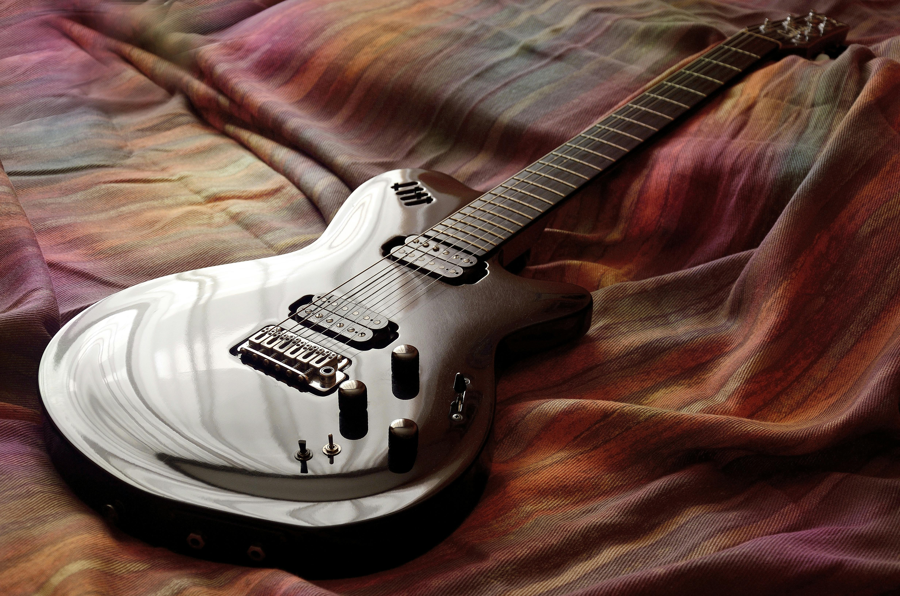
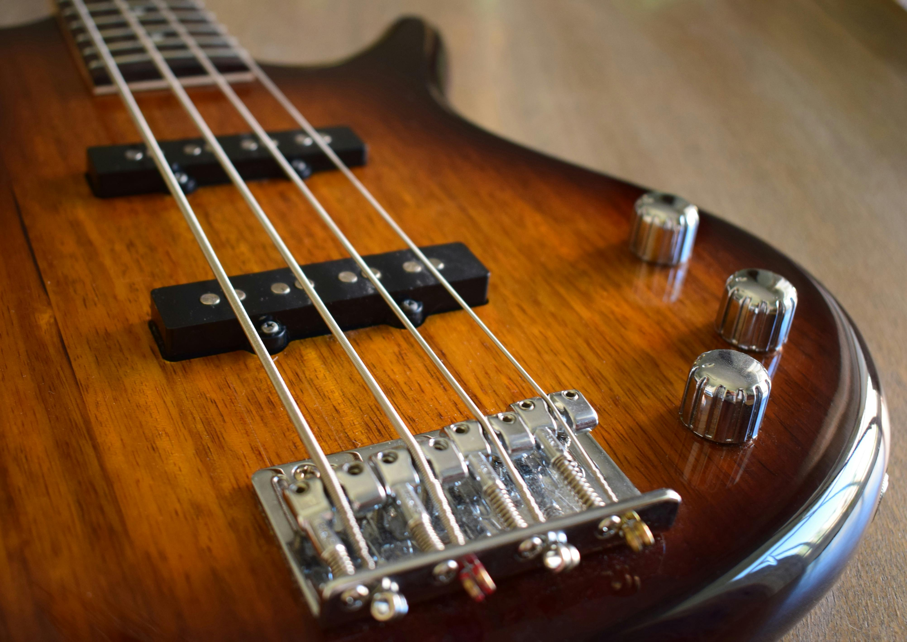

Pick an instrument and play!

The guitar is a versatile stringed instrument with six strings, commonly used in a wide range of musical genres such as rock, jazz, classical, and folk
The piano is a versatile keyboard instrument capable of producing a wide range of dynamics and tones, making it integral to classical, jazz, and contemporary music.

The bass is a stringed instrument, typically with four to six strings, that provides the rhythmic and harmonic foundation in a wide variety of musical genres.

Drums are a percussion instrument consisting of various sized drums and cymbals, providing rhythm, tempo, and dynamic energy to nearly all styles of music.